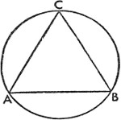
13. Düzlemdeki Doğrusal Üçgenlerin Kenarları ve Açıları Üzerine
I.
Açıları verilen bir üçgenin kenarları da verilmiş olur. Euclides'in dördüncü kitabının V. bölümünde de geçtiği gibi bir çember içindeki ABC üçgenini çizelim. Buna göre AB, BC ve CA yayları derece cinsinden verilmiş olacak ve burada iki dik açı 360ºye eşit olacak.
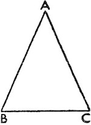
Çapı 200.000 birime eşit olduğu varsayılan çemberdeki yayların verilmesiyle, oluşturulan tablo sayesinde üçgenin ilgili kenarları da bulunur.
II.
Üçgenin iki kenarı, bir açıyla birlikte verilirse diğer kenar ve açılar da bulunabilir. Verilen kenarlar birbirine eşit olabilir ya da olmayabilir. Fakat verilen açı ya dik, ya dar ya da geniş olur.
Yine, bulunan kenarlar açıyı kapsayabilir ya da kapsamaz. Buna göre verilen ABC üçgeninde evvela AB ve AC kenarları eşit olsun ve A açısını oluştursun. Bu durumda BC tabanındaki diğer açılar da –geri kalanın yarısı olarak– eşit olacağından A diğer iki açıdan çıkarılır. Evvela tabandaki açı verilirse, bu durumda hemen eşiti bulunarak bu iki açı yardımıyla onları tamamlayan diğer açı elde edilir. Fakat bir üçgenin açıları verilirse kenarları da bulunur: Dahası BC tabanı, AB'nin ve AC'nin yarıçap olarak 100.000 birim ya da çap olarak 200.000 birim olduğu tablonun ilgili bölümlerinden bulunmuş olur.
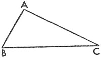
III.
Buna karşılık verilen kenarların oluşturduğu BAC bir dik açıysa, yine aynı sonuca ulaşılır. AB'nin karesiyle AC'nin karesinin toplamı BC'nin karesini verdiğinden, BC uzunluk olarak bulunur ve birbirlerine oranından diğer kenarlar da belirlenir. Ancak dik üçgeni kapsayan çemberin parçası yarım çember olduğundan BC tabanı da çap olur.
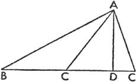
Buna göre, BC 200.000 birimken, C ve B açılarının gördüğü AB ve AC de bulunacaktır. Ve tablodaki oranlar, iki dik açı 180º olmak üzere, açıları derece cinsinden ortaya çıkaracaktır. Açıkça anlaşıldığını sanıyorum ki BC, dik açıyı oluşturan kenarlardan biriyle birlikte bulunursa, aynı sonuç ortaya çıkar.
IV.
Şimdi ABC bir dar açı olsun ve AB ile BC kenarları tarafından oluşturulsun. A noktasından BC'ye bir dikme indirelim; gerekirse –üçgenin içinde veya dışında olmasına göre– buna da AD diyelim.
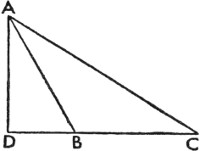
Bu dikme sayesinde ABD ve ADC dik üçgenleri ayırt edilir ve ABD'de açılar verilmiş olduğundan D bir dik açıdır ve B de hipoteze göre bulunmuş olur. O halde çemberin AB olan çapı 200.000 birimken, A ve B açılarının gördüğü AD ve BD tablo sayesinde belirlenmiş olur. AB'nin uzunluk olarak verildiği mantıkla AD ve BD de benzer şekilde tespit edilir. O halde yukarıda gösterildiği gibi, ADC dik üçgeninde AD ve CD kenarları bulunarak aranan AC kenarı ve ACD açısı bulunur.
V.
B geniş açı olduğunda ortaya farklı bir sonuç çıkmaz. Zira A'dan BC'ye indirilen AD dikmesi, ABD üçgenini oluşturur. Bu sayede ABC'nin dış açısı olan ABD bulunur ve D açısı 90ºdir.
O halde AB 200.000 birim iken BD ve AD kenarları bulunur. BA ve BC'nin birbirine oranı verildiği için BD ve bütün olarak CBD verilince AB aynı uzunlukta bulunur. ADC dik üçgeninde AD ve CD kenarları bilindiğinden aranan AC kenarıyla BAC ve ACB açıları da bulunmuş olur.
VI.
Verilen AC ve AB kenarlarından biri, verilen B açısının gördüğü bir kenar olsun. Buna göre ABC üçgenini içine alan çemberin çapının 200.000 birim olduğu durumda tablo sayesinde AC, AC'nin AB'ye oranının belirlenmesiyle bulunmuş olur. Aynı şekilde AB de elde edilir ve tablo sayesinde BAC açısıyla birlikte ACB açısı; bu açı sayesinde de CB kirişi belirlenir. Bu mantığa göre herhangi bir büyüklükte olabilirler.
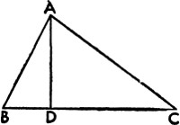
VII.
Tüm kenarları verilen üçgenin açıları da verilmiş olur. Bir eşkenar üçgenin her bir açısının, iki dik açının üçte birine eşit olduğu çok iyi bilinen bir kuraldır. Bir ikizkenar üçgende de bu açıkça böyledir. Zira merkezin etrafındaki 360º dört dik açıya denk geldiğinden ve tabloya göre üçüncü kenar, yani eşit kenarlar tarafından oluşturulan açının bulunduğu yayı ayıran ve çapın yarısı kadar olan kenara eşit olduğundan, eşit kenarlardan her biri üçüncü kenara eşittir. O halde tabandaki iki açının, bütünler açının yarısı kadar olduğu bulunur.
Öyleyse şimdi bunu, aynı yolla dik üçgenlere ayırabileceğimiz eşkenar olmayan üçgenler üzerinde gösterelim. Buna göre ABC, eşkenar olmayan, kenarları bilinen bir üçgen olsun. En uzun kenar olan BC üzerine AD dikmesini indirelim. Bu durumda Euclides'in ikinci kitabının XIII. bölümünde bize aktardığı gibi dar açının AB'yi görmesi durumunda, AC'nin karesiyle BC'nin karesinin toplamının AB'nin karesinden farkı, BC ile CD'nin çarpımının iki katına eşittir. Bu durumda C'nin dar açı olması gerekir; aksi halde AB, Euclides'in birinci kitabının XVII. bölümündeki hipotezlere ters düşerek en uzun kenar olur. O halde BD ve DC bulunur ve daha evvel de pek çok kere olduğu gibi, ABC ile ADC dik üçgenleri kenarları ve açılarıyla elde edilir; böylece üzerinde durulan ABC üçgeninin açıları ortaya çıkmış olur.
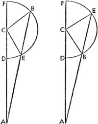
Bir diğer yol: Benzer şekilde Euclides'in üçüncü kitabının XXXVI. bölümü, belki de bize kolay bir yöntem sunacak. Daha kısa olan BC'nin yarıçap, C noktasının merkez olduğu ve geri kalan kenarlardan birini ya da ikisini kesen bir çember çizelim. Evvela, E noktasında AB'yi ve F noktasında AC'yi olmak üzere ikisini de kessin. DCF çapını tamamlamak üzere ADC doğrusunu F noktasına kadar uzatalım. Bu durumda Euclides'in ifade ettiği gibi şu açık hale gelir: FA, AD çarpımı BA, AE çarpımına eşittir; zira her biri çembere A'dan çizilen teğetlerdeki kareye eşittir.
Buna karşılık bütün parçaları bilinen AF de bulunmuş olur, çünkü CF yarıçapı, CD yarıçapına; o da BC'ye eşittir; ayrıca AD de CA'nın CD'den farkına eşittir. BA, AE çarpımı bulunduğundan AE uzunluğu da bilinir; dolayısıyla BE yayını ayıran BE kirişi de bulunmuş olur. EC'nin de katılımıyla BCE ikizkenar üçgenini tüm kenarları bulunmuş olarak elde ederiz. O halde EBC açısı da bulunur. Böylece ABC üçgenindeki geri kalan C ve A açıları yukarıda gösterilenler sayesinde bilinir hale gelir. Bundan farklı olarak, diğer şekildeki gibi AB'nin içbükey çemberin üzerinde yer aldığı ve AB'yi kesmeyen bir çember çizelim. Bununla beraber BE de bulunmuş olur ve BCE ikizkenar üçgeninde CBE açısıyla ABC dış açısı da bulunur. Aynı yöntemle geri kalan açılar da elde edilir. Böylece yerölçüm biliminin büyük oranda içinde barındırdığı doğrusal üçgenlerden yeteri kadar bahsetmiş olduk. Şimdi küresel üçgenlere geçelim.
14. Küresel Üçgenler Üzerine
Burada, küresel bir yüzeydeki büyük çemberlerin üç yayı tarafından oluşturulan küresel üçgeni ele alıyoruz. Fakat bir kutup şeklindeki kesit noktasıyla belirlenen büyük çemberin yayından oluşan açıların farkını ve büyüklüğünü inceleyeceğiz; bu yay, açıyı oluşturan çemberlerin çeyrekleri tarafından kesilen yaydır. Yayın sınırları çemberin bütün çevresine göre belirlendiğinden, toplamının 360°yi verdiğini söylediğimiz dört eş dik açıya göre kesitin açısı ortaya çıkar.
I.
Bir küredeki büyük dairelerin üç yayı varsa ve bunlardan ikisinin birleşimi üçüncüsünden daha uzunsa bunların bir küresel üçgen oluşturduğu açıktır. Euclides'in on birinci kitabının XXIII. bölümü, burada yaylara ilişkin tasarlanan şeyi açılarla ilgili olarak göstermektedir. Açıların arasında olduğu kadar yayların arasında da aynı mantık işlediğinden ve büyük daireler kürenin merkezinden geçen daireler olduğundan, dairelerin bu üç dilimi açıkça ortaya çıkar; yani üç yayın ait olduğu dilimler kürenin merkezinde bir katı açı oluşturur. Böylelikle önerilen şey gerçekleşmiş olur.
II.
Bir küresel üçgenin herhangi bir yayı bir yarım çemberden daha küçük olmalıdır. Zira yarım daire merkezde bir açı oluşturmaz, fakat merkeze bir düz çizgi olarak iner. Yayların sınırlarını belirleyen diğer açılar merkezde bir katı açı oluşturmaz ve bu yüzden bir küresel üçgen meydana getiremez. Ptolemaeus'un bu türden üçgenlere dair yapmış olduğu açıklamanın nedeninin bu olduğunu düşünüyorum; özellikle de küresel dilimin şekliyle ilgili olarak, bir araya getirilen yaylardan hiçbirinin bir yarım çemberden büyük olmaması gerektiğini iddia etmiştir.
III.
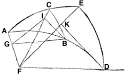
Dik açılı küresel üçgenlerde kürenin çapı, büyük dairede ilk ve diğer kenarın oluşturduğu açının gördüğü kirişe eşit olduğu için, dik açının karşısındaki kenarın iki katı olan kiriş, dik açıyı oluşturan kenarlardan birinin iki katı olan kirişe eşittir. C noktasındaki açının dik olduğu bir ABC küresel üçgeni olsun. Buna göre AB kirişinin iki katının BC kirişinin iki katına oranı; kürenin çapının büyük dairedeki BAC açısının kirişinin iki katına oranına eşittir. A'yı kutup olarak alıp büyük bir çemberin DE yayını çizelim ve ABD ile ACE çeyrek çemberleri tamamlansın. Kürenin F merkezinden dairelerin ortak kesitlerini çizelim: ABD ve ACE dairelerinin ortak kesiti FA; ACE ve DE dairelerinin FE; ABD ve DE dairelerinin FD; AC ve BC dairelerinin de FC olsun. Daha sonra FA'ya dik olarak BG'yi; FC'ye dik olarak BI'yı; FE'ye dik olarak da DK'yi çizelim ve GI'yı da ekleyelim.
Bir daire, kutbu boyunca çizilen bir başka daireyi ancak dik açıyla kestiğine göre AED açısı dik olacaktır. Bu hipoteze göre, ACB açısı da dik olacaktır. EDF ve BCF düzlemlerinin her biri AEF düzlemine dik iner. Bundan dolayı ortak kesitte AFE'nin temel düzleminde K noktasına dik açıyla bir dikme indirilirse bu dikme ve KD, birinin diğerine dik olduğu düzlemlerin tanımına göre bir dik açı oluşturur. Bu yüzden Euclides tarafından on birinci kitabın IV. bölümünde, KD doğrusu AEF dairesine diktir. Fakat BI da aynı düzleme dikti. Bundan ötürü Euclides'in on birinci kitabının VI. bölümünde de gösterildiği gibi, DK BI'ya; FD de GB'ye paraleldir; zira FGB açısı, GFD açısına; o da 90°ye eşittir. Euclides'in on birinci kitabının X. bölümünde gösterildiği gibi, FDK açısı GBI açısına eşittir. Fakat FKD açısı 90°dir ve bu açıklamaya göre; GI, IB'ye diktir. Bu durumda benzer üçgenlerin kenarları orantılıdır ve DF'nin BG'ye oranı, DK'nin BI'ya oranına eşittir. Fakat BI, iki CB yayını ayıran kirişin yarısına eşittir, çünkü BI, F merkezinden yarıçapa dik açıyla iner. Aynı sebeple BG, BA yayının iki katını ayıran kirişin yarısına; DK, DE yayının iki katını ayıran kirişin yarısına ya da DAE'nin iki katını ayıran kirişin yarısına eşittir. Ve yukarıda da gösterildiği gibi, DF, kürenin çapının yarısına eşittir; buna göre AB'nin iki katını ayıran kirişin BC'nin iki katını ayıran kirişe oranı, çapın DAE'nin iki katını ayıran kirişe (ya da DE'nin iki katını ayıran kirişe) oranına eşittir.
IV.
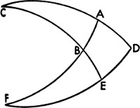
Dik açılı herhangi bir üçgende başka bir açı ve kenar verilirse geri kalan açı ve kenarlar da bulunur. ABC, dik açısı A ve diğer iki açısından biri –B açısı– verilen bir üçgen olsun. Verilen kenarın üç durumunu ele alalım. Bu kenar ya verilen açılara AB şeklinde bitişik, ya sadece dik açıya AC şeklinde bitişik, ya da BC şeklinde dik açının karşısında olur. Evvela verilen kenarı AB olarak çizelim. C noktası kutup olarak ve büyük dairenin yayı DE olarak çizilsin. CAD ve CBE çeyrekleri tamamlansın; AB ve DE, F noktasında birbirlerini kesene kadar uzatılsın. Buna göre diğer taraftan CAD'nin kutbu F noktasında olacaktır; zira A açısı D açısına, o da 90°ye eşittir. Ve bir kürede büyük daireler birbirlerini dik açıyla keserse biri diğerini ortadan ikiye ayırarak onun kutbundan geçer; buna göre ABF ve DEF, dairelerin çeyrekleri olur.
AB verildiği için BF, çeyreğin diğer kısmı olarak bulunur; ayrıca dik EBF açısı, bulunan ABC açısına eşittir. Fakat yukarıda da gösterildiği gibi, BF yayının iki katını ayıran kirişin EF yayının iki katını ayıran kirişe oranı, kürenin çapının EBF'nin iki katını ayıran kirişe oranına eşittir. Ancak kirişlerden üçü biliniyordu: Kürenin çapı, BF'nin iki katını ayıran kiriş, EBF'nin iki katını ayıran kiriş. Ya da yarım kirişler ve buna bağlı olarak –Euclides tarafından altıncı kitabın XV. bölümünde gösterildiği üzere– EF'nin iki katını ayıran kirişin yarısı ve tablo sayesinde EF yayının kendisi ve çeyreğin kalanı DE ya da aranan C'deki açı. Benzer şekilde DE yayının iki katını ayıran kirişin AB yayının iki katını ayıran kirişe oranı, EBC'nin iki katını ayıran kirişin CB'nin iki katını ayıran kirişe oranına eşittir. Fakat dairenin DE, AB ve CE çeyrekleri zaten bulunmuştu ve bu yüzden CB'nin iki katını ayıran dördüncü kiriş ve aranan CB kenarı da bulunacaktır. Ve CB yayının iki katını ayıran kirişin CA yayının iki katını ayıran kirişe oranı, BF yayının iki katını ayıran kirişin EF yayının iki katını ayıran kirişe oranına eşit olduğundan ikisi de kürenin çapının CBA'nın iki katını ayıran kirişe oranına sahiptir; zira birisi için geçerli olan oranlar diğeri için de geçerlidir. Bu yüzden BF, EF ve CB kirişlerinin bulunmasıyla dördüncü kiriş olan CA da bulunur; CA yayı da ABC üçgeninin üçüncü kenarıdır. Fakat bu sefer AC verilen kenar olsun ve problemimiz geri kalan C açısıyla AB ve BC kenarlarını bulmak olsun. Yine benzer şekilde CA yayının iki katını ayıran kirişin CB yayının iki katını ayıran kirişe oranı, ABC'nin iki katını ayıran kirişin çapa oranına eşittir. Buradan hareketle CB kenarı ve çeyrek dairelerin geri kalanları AD ve BE de bulunur. Ve böylece yine, AD'nin iki katını ayıran kirişin BE'nin iki katını ayıran kirişe oranı, ABF'nin iki katını ayıran kirişe, yani çapın BF'nin iki katını ayıran kirişe oranına eşittir. Böylece BF yayıyla birlikte geri kalan AB kenarı da bulunur. Benzer şekilde BC'nin iki katını ayıran kirişin AB'nin iki katını ayıran kirişe oranı, CBE'nin iki katını ayıran kirişin DE'nin iki katını ayıran kirişe oranına eşittir. Buradan hareketle DE yayı veya geri kalan C açısı da bulunmuş olacaktır. Önceki gibi ele alınan BC olursa; AC ve geri kalan AD ve BE bulunur. Bu yüzden sıkça tekrarlandığı gibi, BF yayı ve geri kalan AB kenarı da onları ayıran kirişler ve çap sayesinde bulunur. Teoremin öngördüğü üzere; BC, AB ve CBE yaylarının bulunmasıyla ED yayı, yani aradığımız C'deki açı da bulunur. Yine ABC üçgeninde bulunan A dik olmak üzere A ve B açılarıyla üç kenardan birinin verilmesiyle üçüncü açı ve geri kalan kenarlar da gösterildiği gibi bulunur.
V.
Açıları verilen bir dik üçgenin kenarları da bulunur. Önceki şekli düşünelim. C açısının bulunmasıyla çeyreğin geri kalanı EF ve DE yayı da bulunur. BE, DEF yayının kutbundan geçtiği için BEF bir dik açı olduğundan ve EBF açısı verilen tepe açısına eşit olduğundan; dik açısı E olan BEF üçgeninin EF kenarıyla birlikte B'deki açısı da verilince önceki teorem sayesinde açıları ve kenarları da bulunmuş olur. Bu yüzden BF verilirse çeyreğin geri kalanı AB bulunur. Ve benzer şekilde, ABC üçgeninde geri kalan AC ve BC kenarları da yukarıdaki gibi gösterilmiş olur.
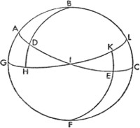
VI.
Aynı küredeki iki üçgenin dik açıları varsa ve bir açı diğerine, bir kenar da ötekine eşitse –kenarlar eş açılara bitişik veya eşit açılardan birinin karşısında olsa da– geri kalan kenarlar diğer kenarlara, geri kalan açı da diğer açıya eşit olacaktır. İçindeki ABD ve CEF üçgenleriyle birlikte bir ABC yarım küresi verilsin. A'daki ve C'deki açılar dik; ADB açısı, CEF açısına; bir kenar da diğer kenara eşit olsun.
Evvela eş kenarlar eş açılara bitişik olsun, yani AD, CE'ye eşit olsun. AB kenarının CF kenarına; BD kenarının EF kenarına ve geri kalan ABD açısının da kalan CFE açısına eşit olduğunu söylüyorum. Kutup olarak B ve F'yi alarak büyük çemberlerin çeyreklerini GHI ve IKL olarak çizelim. ADI ile CEI çeyrek çemberleri de tamamlanmış olsun. Bunlar kaçınılmaz olarak birbirini yarım kürenin kutbunda, yani I noktasında keserler; zira A açısı C açısına, o da 90°ye eşittir. Ve GHI ile CEI çeyrek çemberleri, ABC çemberinin kutupları boyunca çizilmiş olur. O halde AD kenarını CE kenarına eşit olarak aldığımıza göre DI yayının EI yayına eşit olduğu çıkarımı yapılır. Ve IDH açısının IHK açısına eşittir, çünkü eşit olduğu düşünülen açıların tepe noktalarında yer alırlar. Ve H açısı K açısına, o da 90°ye eşittir. Aynı orana sahip olanların oranları da aynı olacağından ve bu bölümdeki üçüncü teoremde de gösterildiği gibi, ID'nin iki katını ayıran kirişin HI'nın iki katını ayıran kirişe oranı, çemberin çapının IDH'nin iki katını ayıran kirişe oranına eşittir. Ve EI kirişinin KI'nın iki katını ayıran kirişe oranı çemberin çapının IEK'nin iki katını ayıran kirişe oranına eşittir. O halde ID'nin iki katını ayıran kirişin HI'nın iki katını ayıran oranı, EI'nın iki katını ayıran kirişin IK'nin iki katını ayıran kirişe oranına eşittir. Euclides'in Elementler'inin beşinci kitabının XIV. bölümünde de gösterildiği gibi, DI'nın iki katını ayıran kiriş IE'nin iki katını ayıran kirişe eşittir. O halde HI'nın iki katını ayıran kiriş de IK'nin iki katını ayıran kirişe eşittir. Eşit çemberlerde eşit kirişler eşit yayları kestiğinden ve katların parçaları –tıpkı katlar gibi– aynı oranda olduğundan; IH ve IK yayları eşit olacaktır; bu yüzden çeyrek çemberlerin kalanları GH ve KL de eşit olacaktır. Bu nedenle B açısının F açısına eşit olduğu açıktır. Üçüncü teoremin aksine AD'nin iki katını ayıran kirişin BD'nin iki katını ayıran kirişe oranı, HG'nin iki katını ayıran kirişin BDH'nin iki katını ayıran kirişe oranına ya da çapa eşit olduğu ve EC'nin iki katını ayıran kirişin EF'nin iki katını ayıran kirişe oranı, KL'nin iki katını ayıran kirişin FEK'nin iki katını ayıran kirişe oranına ya da çapa eşit olduğu için AD'nin iki katını ayıran kirişin BD'nin iki katını ayıran kirişe oranı, EC'nin iki katını ayıran kirişin EF'nin iki katını ayıran kirişe oranına eşittir ve AD de CE'ye eşittir. Bu yüzden Euclides'in Elementler'inin beşinci kitabının XIV. bölümünde gösterildiği gibi BD yayı EF yayına eşittir; zira yayların iki katını ayıran kirişler eşittir. Aynı şekilde BD ve EF'nin de eşit olmasıyla geri kalan kenarların ve açıların da eşit olduğunu göstereceğiz. Buna mukabil AB ve CF kenarlarının eşit olduğu farz edilirse, sonuçlar aynı orana uygun olarak bulunacaktır.
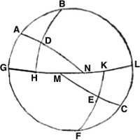
VII.
Şimdi de dik açı olmadığında, eş açılara bitişik olan kenarların birbirine eşit olması koşuluyla, aynı şey gösterilecek. Bu yolla ABD ve CEF üçgenlerinde B açısı F açısına, D açısı da E açısına eşitse; bunun yanında BD kenarı da eş açılara bitişik ve BD kenarı EF kenarına eşitse bu üçgenlerin eşkenar ve eşit açılı olduğunu söylerim. Bir kez daha B ve F kutup olmak üzere büyük çemberlerin GH ve KL yaylarını çizelim. AD ve GH'nin uzantıları N noktasında kesişsin ve benzer şekilde EC ve LK'nin uzantıları da M noktasında kesişsin.
Bu durumda HDN ve EKM üçgenlerinde HDN açısı KEM açısına eşittir. Zira eşit oldukları varsayılan açıların tepe noktasında yer alırlar. Ayrıca çemberlerin kutup noktalarındaki kesişimlerinden ötürü H açısı K açısına, o da 90°ye eşit olur. DH kenarı EK kenarına eşit olduğundan bu üçgenler önceki kanıta göre eşit açılı ve eş kenarlıdır. Ve yine B açısının F açısına eşit olduğu düşünülmesine binaen GH yayı KL yayına eşit olduğu için, toplamayla GHL yayının MKL yayına eşitliği de eşitlerin eklenişine dayanan aksiyomdan ötürü gösterilmiş olur. Ve böylelikle GN kenarının ML kenarına; ANG açısının CML açısına ve G açısının L açısına, onun da 90°ye eşit olduğu AGN ve MCL üçgenleri oluşur. O halde üçgenlerin kenarları ve açıları eştir. Bu yüzden eşitlerden eşitler çıkarılırsa geri kalanlar da eşit olur: Gösterildiği gibi, AD, CE'ye; AB, CF'ye ve BAD de ECF'ye eşit olur.
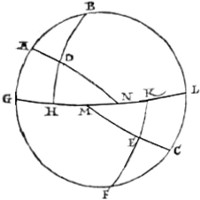
VIII.
İki üçgenin iki kenarı diğerinin iki kenarına, –eş kenarların arasındaki ya da tabandaki– bir açısı diğerinin bir açısına eşitse; bu üçgenlerin tabanları ve geri kalan açıları da birbirine eşittir. Önceki şekilde olduğu gibi, AB kenarı CF kenarına ve AD kenarı CE kenarına eşit olsun. Evvela A açısını eş kenarlar arasındaki C açısına eşitleyelim. Yani BD tabanını EF tabanına; B açısını F açısına ve BDA açısını CEF açısına eşitleyelim.
Böylece G açısının L açısına, onun da 90°ye eşit olduğu AGN ve CLM üçgenlerini elde etmiş olacağız. GAN açısı, 180°nin BAD açısından farkına; MCL açısı da 180°nin ECF açısından farkına eşittir. O halde GAN açısı, MCL açısına eşittir. Bu durumda üçgenler eşkenarlı ve eşit açılıdır. AN yayı CM yayına; AD yayı da CE yayına eşit olduğundan, çıkarma işlemiyle DN yayının ME yayına eşit olduğu bulunur. Fakat açıklandığı üzere, DNH açısı EMK açısına eşittir ve H açısı K açısına, o da 90°ye eşittir. Bu durumda DHN ve EMK, eşit açılı ve eş kenarlı üçgenlerdir. Buradan da BD yayının EF yayına ve GH yayının KL yayına eşit olduğu çıkar. Buna göre B açısı F açısına, ADB açısı da FCB açısına eşittir. Fakat AD ve CE kenarları yerine BD tabanının EF tabanına eşit olduğu düşünülebilir. Bunlar eşit açıların karşısında bulunurlar. Geri kalanlar da aynı şekilde alınırsa ispat benzer şekilde yapılabilir. Buna göre GAN dış açısı MCL dış açısına, G açısı L açısına, o da 90°ye ve AG kenarı CL kenarına eşit olduğundan, aynı şekilde eşit açılı ve eş kenarlı AGN ve MCL üçgenlerini elde etmiş oluruz. Dahası, bunların parçalarından DNH üçgeni MEK üçgenine eşittir. Çünkü H açısı K açısına, o da 90°ye, DNH açısıysa KME açısına eşittir. Çeyrek çemberlerde yapılacak çıkarma işlemiyle de DH kenarı, EK kenarına eşit olduğu görülür. Bu nedenle seyir önceki gibi devam eder.
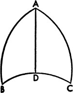
IX.
Dahası küresel ikizkenar üçgenlerde tabandaki açılar birbirine eşittir. AB kenarının AC kenarına eşit olduğu bir ABC üçgeni alalım. Tabandaki ABC açısının ACB açısına eşit olduğunu düşünüyoruz. A tepe noktasından tabanı dik açıyla kesen büyük bir daire indirelim; başka bir deyişle bu, tabandaki kutup noktaları boyunca bir AD çemberi olsun.
Buna göre ABD ve ADC üçgenlerinde BA kenarıyla AC kenarı ve iki üçgendeki AD kenarları birbirine eşit; BDA açısı CDA açısına, o da 90°ye eşit olduğundan, yukarıda gösterilen eşitliklerden de anlaşılacağı gibi, ABC açısı ACB açısına eşit olur.
Çıkarım
Buradan hareketle, ikizkenar üçgenin tepe noktasından çizilen ve tabanına dik inen yayın, aynı zamanda tabanı ve eşit kenarlar arasında kalan açıyı ikiye böldüğü sonucu çıkar. Yukarıda gösterilenler sebebiyle sonuç açıkça ortadadır.
X.
Aynı küredeki iki üçgenin bütün kenarları eşitse, bu üçgenlerden birinin her bir açısı diğerinin her bir açısına eşit olacaktır. Her bir üçgende büyük dairelerin üç dilimi, tepe noktalarını kürenin merkezinin oluşturduğu ve tabanlarında dışbükey üçgenlerin yaylarını ayıran düz çizgilerin oluşturduğu düzlemsel üçgenlerin yer aldığı piramitleri meydana getirir. Ve bu piramitler benzer ve eşit katı cisimler tanımına göre benzer ve eşittir.[91] O halde benzerlik oranı, söz konusu açılar hangi dereceden seçilirse seçilsin her birinin birbirine eşit olur. Buna göre üçgenlerde açılardan her biri birbirine eşittir. Özellikle de şekil benzerliğini tanımlayanlar genelde benzer eğimlere sahip olan ve karşılıklı açıları birbirine eşit şekillerin denk olduğunu söyler. Bu nedenle düzlemsel üçgenlerde olduğu gibi, bir küredeki eş kenarlı üçgenlerin birbirine benzerliğinin açıkça ortada olduğunu düşünüyorum.
XI.
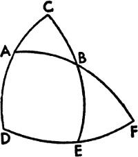
İki kenarı ve bir açısı bilinen her üçgenin geri kalan kenarları ve açıları da bulunacaktır. Buna göre iki kenarın eşit olduğu verilirse tabandaki açılar eşit olacak; tepe noktasından tabana dik bir yay çizilerek ve dokuzuncu teoremdeki çıkarım sayesinde arananlar kolayca bulunabilecektir.
Fakat iki kenarla birlikte A açısının verildiği ABC üçgeninde olduğu gibi verilen kenarlar eşit değilse, kenarlar ya bulunan açıyı oluşturur ya da oluşturmaz: Evvela AB ve AC kenarları verilen açıyı oluştursun. Kutup olarak C ile birlikte büyük bir daire içinde DEF yayını çizelim, CAD ve CBE çeyrek çemberleri tamamlanmış olsun, AB de DE'yi F noktasında kessin. Buna göre ADF üçgeninde AD kenarı, 90ºnin AC yayından farkına ve BAD açısı da 180ºnin CAB açısından farkına eşittir. Bu açıların boyutları ve oranları düz çizgilerin ve doğruların kesişiminde ortaya çıkan açılarınkiyle aynıdır. Buna ek olarak D açısı 90ºdir.
Bu yüzden –buradaki dördüncü teoremle de anlaşılıyor ki– ADF üçgeninin kenarları ve açıları da bulunur. Yine BEF üçgeninde F açısı bulunursa ve E açısı 90º ise, buna uygun olarak çemberlerin birbirlerinin kutup noktaları boyunca kesişimleri nedeniyle BF kenarı, ABF yayının AB yayından farkına eşittir. O halde aynı teoreme göre, BEF açısının kenarları ve açıları da bulunur. Aranan BC kenarı da, 90ºnin BE'den farkına eşit olarak bulunur. DE yayı, DEF yayının EF yayından farkına eşittir. Ve böylelikle C açısı bulunur. EBF açısı sayesinde de aranan ABC tepe açısı da bulunur. Fakat AB kenarı yerine açının karşısında bulunan CB kenarı düşünülürse, yine aynı sonuç ortaya çıkar. Buna uygun olarak diğer çeyrek çemberler AD ve BE de bulunur. Ve yine aynı şekilde, ADF ve BEF üçgenlerinin de kenarları ve açıları bulunur. Böylelikle amaçlandığı gibi, ABC üçgeni kenarları ve açılarıyla karşımıza çıkar
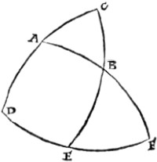
XII.
Dahası, bir kenarla birlikte herhangi iki açı verilirse, yine aynı sonuç alınacaktır. Önceki şekilde yer alan yapı dursun ve ABC üçgeninde her iki açıya da bitişik olan AC kenarıyla birlikte ACB ve BAC açıları verilmiş olsun. Bu durumda açılardan biri dikse, önceki dördüncü teorem sayesinde oranların hepsi aynen takip edilecektir. Fakat farklı teoremler kullanalım ve açıların hiçbiri dik olmasın istiyoruz. Buna göre AD, AC'nin 90ºden farkına ve BAD açısı da BAC açısının 180ºden farkına, D açısı da 90ºye eşittir. O halde bu bölümdeki dördüncü teorem sayesinde AFD üçgeninin kenarları ve açıları bulunur.
Fakat C açısının bulunmasıyla, DE yayı da bulunur; buna göre EF yayı, 90ºnin DE yayından farkına eşittir. BEF açısı 90ºdir ve her iki üçgendeki F açısı aynıdır. Dördüncü teorem sayesinde, benzer şekilde BE ve BF bulunur ve bunların yanında aranan AB ve BC kenarları da elde edilir. Dahası bulunan açılardan biri bulunan kenarın karşısındaysa, yani ACB açısı yerine ABC açısı bulunur ve diğeri aynı kalırsa, bu durumda aynı şekilde bütün ADF üçgeninin açıları ve kenarlarıyla bulunduğu gösterilmiş olur. Benzer durum bunun parçası olan BEF üçgeni için de geçerlidir: Her ikisinde de ortak olan F açısından ötürü, EBF açısı verilen açının tepe noktasında olduğu için ve E açısı da dik olduğundan yukarıda gösterildiği gibi bütün kenarlar elde edilir. Buradan hareketle bir kürenin şekline uygun olarak bütün bu hesapların her daim değişmez, ortak bir bağla birbirine bağlı olduğunu dile getiriyorum.
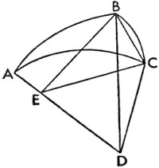
XIII.
En nihayetinde bir üçgenin bütün kenarları verilirse, açılar da bulunur. ABC üçgeninin bütün kenarları verilse bütün kenarları da bulunur demek istiyorum. Buna göre üçgen ya eşit kenarlara sahip olacaktır ya da olmayacaktır. Evvela AB ile AC eşit olsun. Bu durumda bu kenarların iki katını ayıran kirişlerin yarıları da eşit olur. Bu yarımlar BE ve CE olsun; bunlar, Euclides'in üçüncü kitabının IV. bölümünde gösterildiği gibi, kürenin merkezinden eşit uzaklıkta olduğundan birbirlerini dairelerin ortak kesiti olan DE'deki E noktasında kesecektir. Fakat Euclides'in üçüncü kitabının III. bölümünde de söylendiği gibi, ABD düzleminde DEB açısı 90ºdir; benzer şekilde ACD düzleminde DEC açısı da 90ºdir.
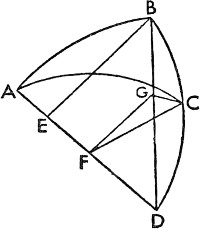
Bu yüzden Euclides'in on birinci kitabının III. açıklamasında da gösterildiği gibi, düzlemlerin eğim açısı BEC'yi şu yöntemle buluruz: BC'yi ayıran bir düz çizgi olduğundan yaylarının verilmesiyle kenarlarının bulunduğu bir BEC doğrusal üçgenimiz olur. Buna göre açılar bulunabilir hale geldiğinden aranan BEC açısını elde edebiliriz. Yani küresel BAC açısıyla birlikte yukarıdaki gibi diğer açılara da ulaşabiliriz. Fakat bu üçgen ikinci şekilde gösterildiği gibi çeşitkenarsa, şurası açıktır ki kenarların iki katını ayıran kirişlerin yarısı hiçbir şekilde birbirine değmez. Eğer AC yayı, AB yayından büyükse; CF, AC'nin iki katını ayıran kirişin yarısına eşit olduğundan CF daha aşağıda olacaktır. Fakat AC yayı AB yayından küçükse, bu durumda Euclides'in üçüncü kitabının XV. bölümünde anlatıldığı gibi, söz konusu çizgilerin daha yakın ve merkezden daha uzak olmasına göre CF daha yukarıda olacaktır. Şimdi BE'ye paralel olarak FG çizilsin ve iki dairenin ortak kesiti olan BD'yi G noktasında kessin. Bu durumda, EFG açısının AEB açısına, onun da 90ºye eşit olduğu aşikârdır. Hatta CF, AC'nin iki katını ayıran kirişin yarısına eşit olduğundan EFC açısının da 90ºye eşit olduğu apaçıktır. O halde CFG, AB ve AC çemberlerinin kesit açısıdır ve biz bu açıyı da buluruz. Buna göre DF'nin FG'ye oranı, DE'nin EB'ye oranına eşittir; zira DFG ve DEB üçgenleri benzerdir.
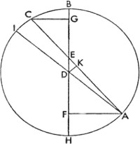
O halde FC verilirse FG de bulunur ve DG'nin DB'ye oranı, DE'nin EB'ye oranına eşittir. Bundan dolayı DC 100.000 birimken, DG aynı uzunlukta bulunur. Fakat GDC açısı, BC yayı boyunca verilirse; düzlemsel üçgenlerle ilgili ikinci teorem sayesinde GC kenarı, GFC düzlemsel üçgeninin geri kalan kenarlarıyla aynı uzunlukta bulunur. Buna göre düzlemsel üçgenlerle ilgili son teorem sayesinde GFC açısını –dolayısıyla BAC küresel açısını– elde etmiş oluruz. Daha sonra küresel üçgenlerle ilgili on birinci teorem sayesinde geri kalan açıları da bulabiliriz.
XIV.
Dairenin verilen bir yayı, oluşan her iki dilim de bir yarım daireden küçük olacak şekilde herhangi bir yerde kesiliyorsa ve bir dilimin iki katını ayıran kirişin yarısının diğer dilimin iki katını ayıran kirişin yarısına oranı verilirse, bu dilimlerin yayları da bulunur. Bunun için, D merkezinin etrafında ABC yayını çizelim ve ABC, herhangi bir B noktasında öyle kesilsin ki dilimler, bir yarım daireden küçük olsun. Ve AB'nin iki katını ayıran kirişin yarısının BC'nin iki katını ayıran kirişe oranı uzunluk olarak verilsin, yani AB ve BC yayları da verilsin demek istiyorum.
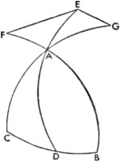
Bunun için, çapın E noktasında kestiği AC doğrusu çizilsin ve A ile C uç noktalarından çapa doğru AF ve CG dikmeleri insin. Kaçınılmaz olarak AF, AB'nin iki katını ayıran kirişin yarısına; CG de, BC'nin iki katını ayıran kirişin yarısına eşittir. O halde AEF ve CEG dik üçgenlerinde AEF açısı, CEG açısına eşittir; zira bunlar dikey açılardır. Ve bu yüzden eşit açılı ve benzer üçgenlerde eşit açıların karşısında bulunan kenarlar orantılı olur: AF'nin CG'ye oranı, AE'nin EC'ye oranına eşittir. Buna göre, AF'nin ya da GC'nin uzunluğunun verildiği durumlarda AE ve EC'yi elde etmiş oluruz. Fakat ABC yayını ayıran kirişin uzunluğu, içinde DEB yarıçapını, AC kirişinin yarısı olan AK'yi ve EK'nin kalanı verilirse bulunur. DA ve DK de bunlara ekleyelim ve BD'nin uzunluğunun verildiği durumda bunlar da bulunur: DK, ABC yayını bütünleyen ve DAK açısının oluşturduğu diğer dilimi ayıran kirişin yarısı olarak bulunacaktır. Buna göre ABC yayının yarısını oluşturan ADK açısı da elde edilir. Fakat iki kenarı belirlenen ve EKD açısının dik olduğu EDK üçgeninde, EDK açısı da bulunur. Bu durumda, AB yayını oluşturan bütün EDA açısı da bulunur. Buradan hareketle, gösterilmeye çalışıldığı üzere, geri kalan CB de bulunmuş olur.
XV.
Bir üçgenin, hiçbiri dik olmayan bütün açıları verilirse bütün kenarlar da bulunur. Hiçbir açısı dik olmayan ABC üçgeninin açıları verilsin. Böyle bir durumda bütün kenarların da bulunabileceğini söylüyorum.
Buna göre açılardan birinden, diyelim ki A'dan, CB'nin kutup noktaları boyunca bir AD yayı indirelim. AD, BC'yi dik açıyla kesecek ve üçgenin içine, tabandaki –biri geniş diğeri dar– B ya da C açısına doğru inecektir. Buna göre yay, geniş açıdan tabana doğru çizilmiş olur. Böylece BAF, CAG ve DAE çeyrek çemberleri tamamlanarak, kutup noktaları B ve C ile birlikte EF ve EG yayları çizilmiş olsun. Buna göre F açısı, G açısına, o da 90ºye eşit olur. O halde EAF dik üçgeninde AE'nin iki katını ayıran kirişin yarısının EF'nin iki katını ayıran kirişin yarısına oranı, kürenin çapının yarısının EAF'nin iki katını ayıran kirişin yarısına oranına eşittir. Benzer şekilde AEG dik üçgeninde AE'nin iki katını ayıran kirişin yarısının EG'nin iki katını ayıran kirişin yarısına oranı, kürenin çapının yarısının EAG'nin iki katını ayıran kirişin yarısına oranına eşittir. Bu durumda eşitlikten hareketle, EF'nin iki katını ayıran kirişin yarısının EG'nin iki katını ayıran kirişin yarısına oranı, EAF'nin iki katını ayıran kirişin yarısının EAG'nin iki katını ayıran kirişin yarısına oranına eşittir. Ve FE ile EG yayları verildiği için FE yayı 90ºnin B'den farkına, EG yayı da 90ºnin C açısından farkına eşittir ve buna göre EAF ile EAG açıları arasındaki orana –başka bir deyişle dikey açılar BAD ile CAD arasındaki orana– da ulaşırız. Şimdi de BAC açısının bütünü verilsin; buna göre evvelki teoremden hareketle BAD ve CAD açıları da bulunur. Daha sonra beşinci teorem sayesinde AB, BD, AC, CD kenarlarını ve BC yayının tamamını belirleyebiliriz.
Amacımıza göre üçgenlere dair esas bilgiler şimdilik yeterlidir. Zira burada, bu konuların daha detaylı bir şekilde incelenmesine gerek duyulsaydı, kitabın boyutu da alışılmadık tarzda olurdu.
Birinci kitabın sonu.